← 返回阅读库 · 原论文目录
论文讲解阅读文档 · 机器人学 · v108
Neuroevolution of Self-interpretable Agents[2003.08165]
视频时长 00:13:30；讲解文字 5,650 字符；提取讲解画面 43 张。按视频原顺序阅读，每段文字保留时间戳。
文字来自整段视频的自动语音转写，按自然停顿分段，并与 PPT / 论文页面 / 演示画面对齐。未将讲解压缩为摘要；术语、数字和口述公式请结合画面及原论文核对。 阅读稿已校正规范部分明确术语误识别；原始逐字稿和每处修改记录另行保留。
讲解画面为源视频截图（640×360），不是可编辑 PPT 文件。全片按每秒 2 帧扫描内容变化，逐步展开页保留；连续动画保留代表画面。清晰度受源视频限制。
下载完整资料包 · 含离线 HTML、PDF、Word、全部 PPT 画面和字幕。
原论文与材料
Neuroevolution of Self-Interpretable Agents · 下载完整 PDF（12 页）
按时间阅读
00:00:00–00:00:27 · 画面 001
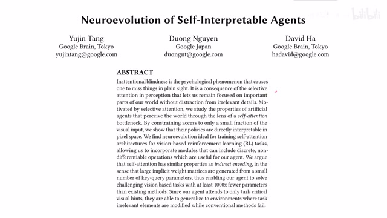
00:00:00–00:00:27 · 画面 001大家好今天我们来迅速说一篇论文 Neuroevolution of Self-Interpretable Agents 那么本文的核心思想呢是把 Self-Attention Module 引入到 Reinforcement Learning 的 Policy Network 当中那么这样子呢 Self-Attention 相对于传统的 Convolutional Neural Network 它的参数量呢是非常少的但是作者发现呢即便如此呢我们依然能够取到很好的效果而且本文提出的网络呢具有很强的泛化性能
00:00:27–00:00:44 · 画面 002
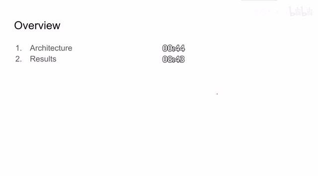
00:00:27–00:00:44 · 画面 002那么在今天的视频中呢我们就直接介绍本文提出的网络的结构还有作者汇报的实验以及结果那么关于 self attention 的部分呢我们已经在之前的视频中介绍过了那么如果有不熟悉的朋友呢欢迎去之前的视频查看好的那么本文提出了一个怎么样的架构呢本文的核心思想就是当我观察到一张图像之后我把它送到这个 self attention 里面
00:00:44–00:01:30 · 画面 003
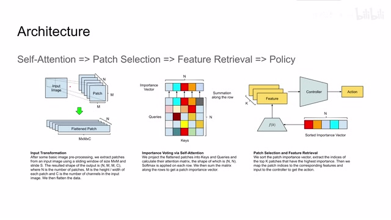
00:00:44–00:01:30 · 画面 003我通过 self-attention 来选择出一些 important patches 也就是重要的一些图像的块因为我们在第一步我们要把图像放到 attention module 里面的时候我们会把图像拆成一个个块那么其中哪些块是重要的包含着有利于我们控制的信息那么在这里一步作者会把它筛选出来最后作者把这些选出来的重要的块里面的特征提取出来吸取出来之后呢送到我们的 controller 里面形成一个 policy 来最后执行我们的 action 那么具体一向要来看首先这是我们的输入图像作者呢这里把它拆成了 mxm 个的小块就是像我们做卷积的方式一样但是我们但是我们只是移动这个窗口并不做卷积的操作那么每个窗口呢就形成一个 patch 它大小是 mxm 一共有 n 个
00:01:30–00:02:07 · 画面 004
00:01:30–00:02:07 · 画面 004然后呢我们对每一个 patch 把这个 m 乘 m 的这个 2d 的 matrix 给它变成一个 vector 这样子呢我们就有 m 乘 m 乘 c 长度的一个 vector 还是呢它的数量呢是 n 个然后呢我们就可以把这些 vector 送到 attention module 里面也就是这里我们看到这里的 patches 是 529 个 patches 每个是 7 乘 7 乘 3 然后呢 7 7 49 再乘 3 147
00:02:07–00:02:13 · 画面 005
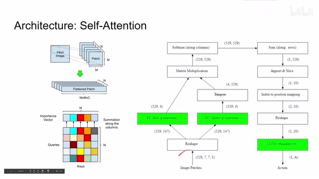
00:02:07–00:02:13 · 画面 00500:02:13–00:02:47 · 画面 006
00:02:13–00:02:47 · 画面 006经过 reshape 之后我们就变成了 529 个 vector 每个 vector 的长度是 147 把这个 vector 送到一个是 key networks 一个是 query networks 这里作者定义的 key 和 query 它们的长度都是 4 然后把这两个对吧和我们熟悉的乘法的 attention 又会得到一个 529 乘 529 的 attention 的矩阵对着这个矩阵的每一列做 softmax 可以看到像这样
00:02:47–00:02:48 · 画面 007
00:02:47–00:02:48 · 画面 007这里我们的行代表不同的 queries 列代表不同的 key 这个矩阵就是 attention 矩阵它描述了两个 patches 之间的相互的关系那么很显然如果一个 patches 跟其他的很多 patches 都有一定的关系那么说明这个 patch 应该是非常重要的于是作者就想到我可以通过把 attention 的 value 直接加起来
00:02:48–00:02:49 · 画面 008
00:02:48–00:02:49 · 画面 00800:02:49–00:02:50 · 画面 009
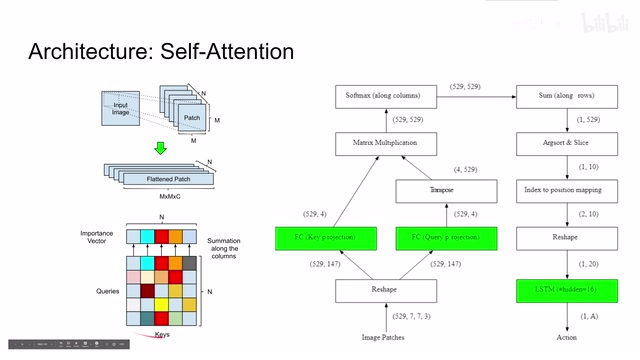
00:02:49–00:02:50 · 画面 00900:02:50–00:02:58 · 画面 010
00:02:50–00:02:58 · 画面 01000:02:58–00:03:06 · 画面 011
00:02:58–00:03:06 · 画面 01100:03:06–00:03:07 · 画面 012
00:03:06–00:03:07 · 画面 01200:03:07–00:03:16 · 画面 013
00:03:07–00:03:16 · 画面 013就能够来得到对于这个每个 patch 的 importance 也就是重要性的一个衡量的尺度当然在加起来之前呢我们需要对所有的这些 attention 做 softmax 做一下规划这样子呢我们沿着这个矩阵的列做 softmax 那矩阵的尺寸是不变的在做完这个 softmax 之后呢我们再沿着矩阵的行来给它加起来加起来之后呢我们得到的就是这个 importance vector
00:03:16–00:03:17 · 画面 014
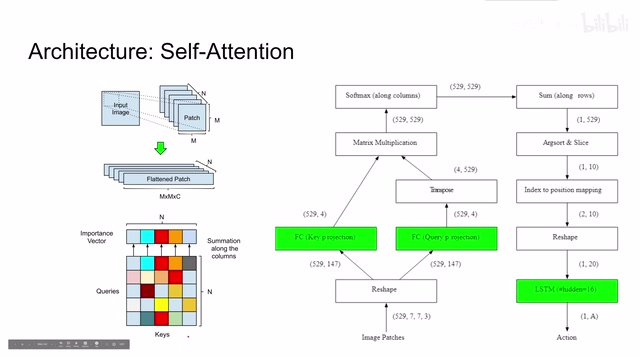
00:03:16–00:03:17 · 画面 01400:03:17–00:03:19 · 画面 015
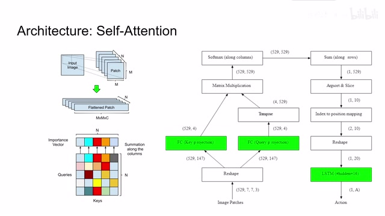
00:03:17–00:03:19 · 画面 01500:03:19–00:03:21 · 画面 016
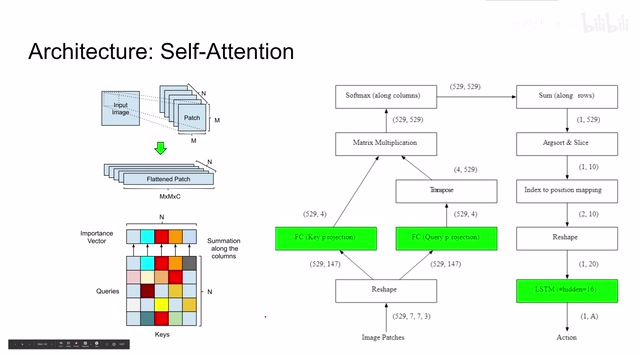
00:03:19–00:03:21 · 画面 01600:03:21–00:03:38 · 画面 017
00:03:21–00:03:38 · 画面 01700:03:38–00:03:39 · 画面 018
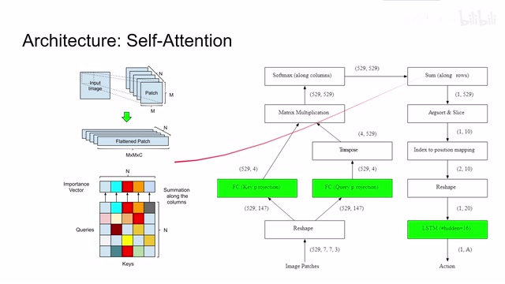
00:03:38–00:03:39 · 画面 01800:03:39–00:04:50 · 画面 019
00:03:39–00:04:50 · 画面 019也就是像我们刚才说的一个 patch 和其他 patch 它的关联的程度是多少那么注意这里这里这个图是写的是那么这里其实有一个小的错误就是我们是既然是按照列来做 soft max 那么我们求 importance vector 时候呢就应该是按照行求和那么当然如果说我们想按照例来求和那么我们就需要沿着行来做 soft max 那么本质呢其实都是一样的就是我们要先规划每个 patch 的 attention 的 value 然后呢再对所有的 attention value 求一个和
我们一个 529 乘 529 的矩阵它沿着行缺完合之后就变成了一个 vector 我们对这个 importance vector 进行排序那么根据这个排序选取其中最重要的前几名的 patch 这个是我们希望关注的 patch 它是包含着最有用的信息在里面那么这里作者选了 10 个也就是说我在这 529 个 patch 当中有 10 个它的信息是最为关键的我们在后面的 feature 呢只看这 10 个 patch 产生的信息就可以了那么当我们确定了这 10 个 patches 之后呢我们就可以从中提取特征了这里我们看到这个 n 长度为 n 的 importance vector 我们排序之后呢选取了 kig 最重要的 patches 然后呢经过这个 fk 来提取它的 feature 这里我们有 kig feature 把这 kig feature 交到我们的 controller 里面就可以形成一个 policy 了这个 feature 我们有哪些选择呢
00:04:50–00:06:45 · 画面 020
00:04:50–00:06:45 · 画面 020其中最简单的就是作者说这里提出的 patch center position 也就是说我这个 patch 它的中心点的横坐标和纵坐标是多少那么对于这个方式来说它的输入是 patch 的 index 输出是 patch 的两个坐标所以是 r square 这个方法是非常简单的也是本文中最终使用的方法当然如果你觉得说我只使用这个 patch 的坐标太过于激进了感觉你还需要了解 patch 里面的内容那可以的我们这里可以选择 patch 的 histogram 也就是颜色直方图这里的 fk 呢它的输入也是 index 输出呢就是长度为 b 的 vectorb 呢就是这个直方图的 bins 的数量那当然你问这个有没有比直方幅还给力一点呢当然还是有的我们会把一个每个 patch 呢送到 cnn 里面让它去提一个特征出来然后我们用这个特征呢把它们组合起来再送到 controller 里面
那么这样子呢每个 index 对应的就是一个 sxsxm 一个深度的这么一个 tensor 那么你当然可以试着使用不同的 feature 这个 k 来看看它们会有什么效果同时呢作者也认为像我们这里选了 k 我们是手动的选了前 10 个那么我们能不能训练一个网络让它来决定说应该选多少个 patch 合适呢这也是一个非常有意思的工作那么我们就可以看到这边的流程图我们在排完了 importance 之后选出了 10 个最重要的 patch 这里是 patch 的 index 那么它就是一个 1 乘 10 的 vector 把这个 index 变成我们的 feature 就是 fk 这里因为我们使用的是这个 patch center position 那么每个 patch 就是两个坐标这样子就变成了 2 乘 10 的 matrix 然后给它变一下形变成长度为 20 的一个 vector
00:06:45–00:06:46 · 画面 021
00:06:45–00:06:46 · 画面 02100:06:46–00:07:10 · 画面 022
00:06:46–00:07:10 · 画面 022那么这个 vector 呢我们可以认为就是我们用来描述当前这个 image 的状态的一个 hidden state 那么把这个 state 放到我们的 lstm 里面这个 lstm 呢会直接帮我们输出一个 action 那么这一部分就是我们的 controller 所以总的来说回顾一下本文提出的方法图像切片然后放到 self-attention module 里面根据 self-attention 呢求出这个 importance vector
00:07:10–00:07:11 · 画面 023
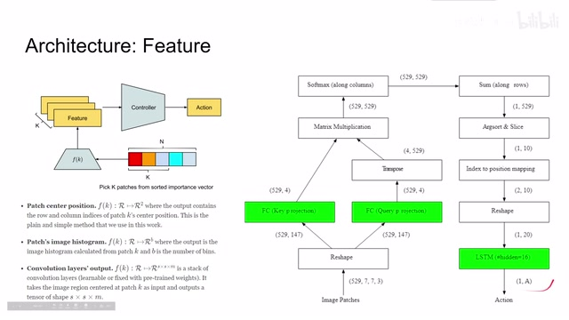
00:07:10–00:07:11 · 画面 02300:07:11–00:07:21 · 画面 024
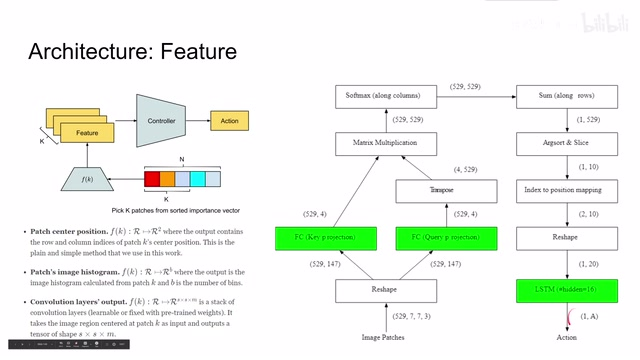
00:07:11–00:07:21 · 画面 02400:07:21–00:07:23 · 画面 025
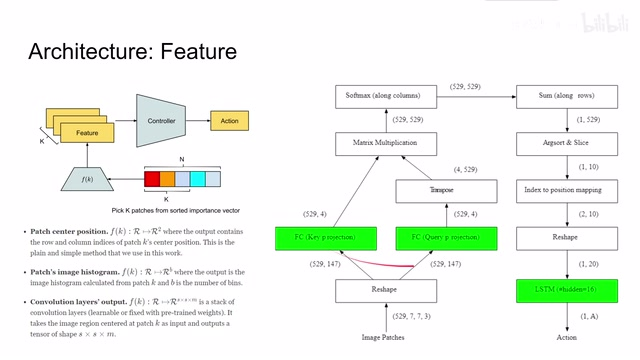
00:07:21–00:07:23 · 画面 02500:07:23–00:07:25 · 画面 026
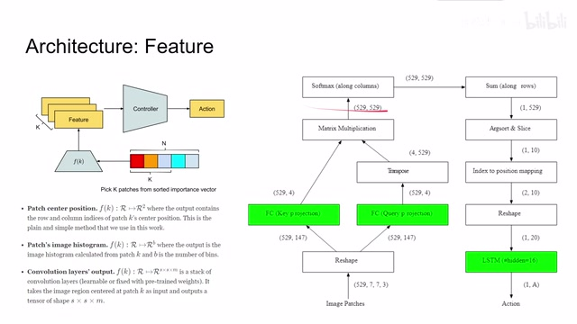
00:07:23–00:07:25 · 画面 02600:07:25–00:07:26 · 画面 027
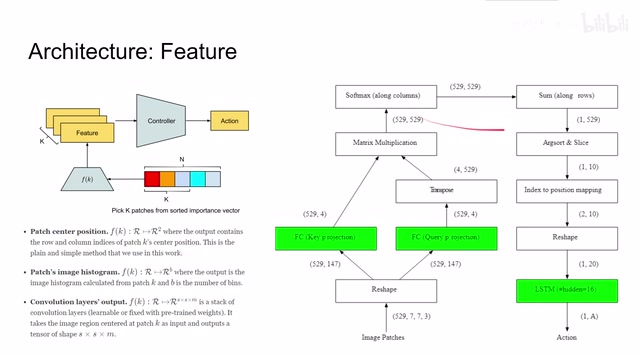
00:07:25–00:07:26 · 画面 027再给你 importance factor 选出 10 个最重要的 10 个最重要的 patches 然后呢再把每个 patch 的信息提出来放到我们的 LSTM 里面这个 controller 里面最后得到我们的 action 那么我们费了这么大劲得到一个 self-attention 它有哪些好处呢这里呢我们看到一个最直观的好处就是本文提出的这个模型它的参数量相对于我们之前的 CNN based 的比如比如 world model
00:07:26–00:07:34 · 画面 028
00:07:26–00:07:34 · 画面 02800:07:34–00:07:38 · 画面 029
00:07:34–00:07:38 · 画面 02900:07:38–00:07:42 · 画面 030
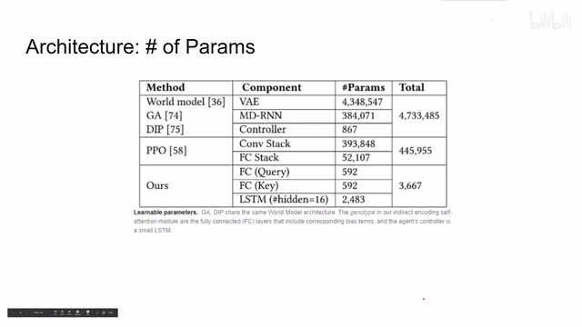
00:07:38–00:07:42 · 画面 03000:07:42–00:08:42 · 画面 031
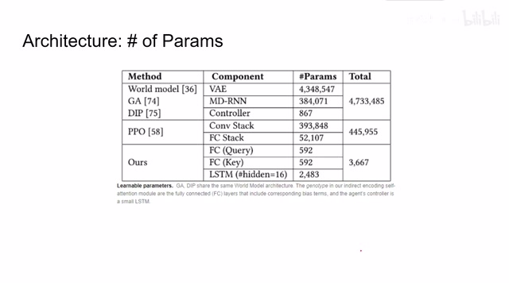
00:07:42–00:08:42 · 画面 031它的参数量是要少很多的我们看到在 world model 里面我们回忆一下它有 vae把图像变成 latent representation它有这个 mixture density network mdn还有 RNN recurrent neural network它来维护一个 hidden state还有我们的 controller它们的参数量加起来是非常大的那么包括其他的像我们 ppo直接通过自由化的方法来优化一个 policy它还是需要我们之前的 convolutional layer
来提出 feature然后放到 fully connected layers 里面来形成我们的 Policy所以它的参数量也是很庞大的那么对于本文提出的方法本文的 Query 就是几层 Fully Connected Layer Key 也是几层 Fully Connected Layer加上一个 LSTM就足够形成我们的 Policy 了所以本文的模型的参数量是远远的小于之前的这些方法
00:08:42–00:08:54 · 画面 032
00:08:42–00:08:54 · 画面 032那么来到结果本文还是使用 CMA-ES也就是自适应协方差矩阵进化策略直接通过一个自由化的方法来顺文的所有的 parameters确实因为相对于之前的这些工作
00:08:54–00:09:00 · 画面 033
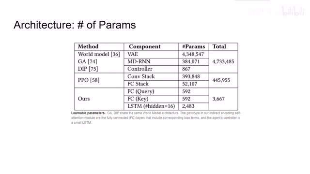
00:08:54–00:09:00 · 画面 033本文的网络的参数量是非常少的
00:09:00–00:09:23 · 画面 034
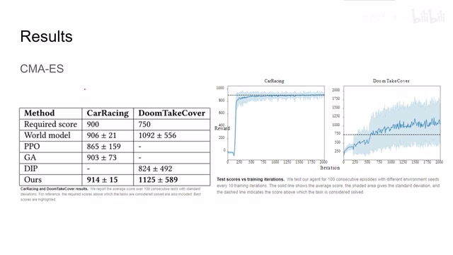
00:09:00–00:09:23 · 画面 034所以可以直接使用 CMA-ES去优化整个这一个模型这里作者对比了本文和其他的前面几种方法包括我们之前介绍的 world model 他们的性能的表现的差异那么测试的环境呢也是我们熟悉的 car racing 和这个 DoomTakeCover 那我们可以看到呢本文提出的方法是 autopop 我们之前这些方法的那么这里呢是 CMA-ES 的迭代的次数还有跟我们 reward 的关系那么下面呢就是本文最有趣的部分了也是本文为什么叫 self interpreter 就是可以解释的
00:09:23–00:09:24 · 画面 035
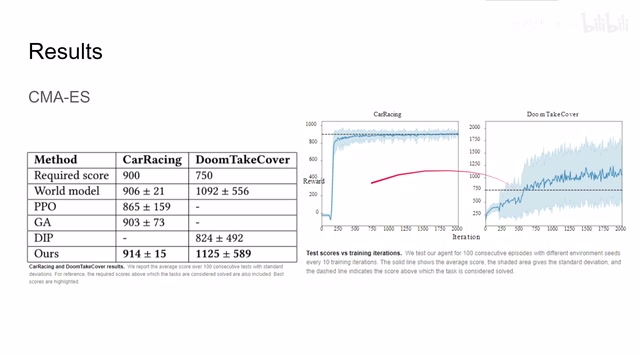
00:09:23–00:09:24 · 画面 03500:09:24–00:09:28 · 画面 036
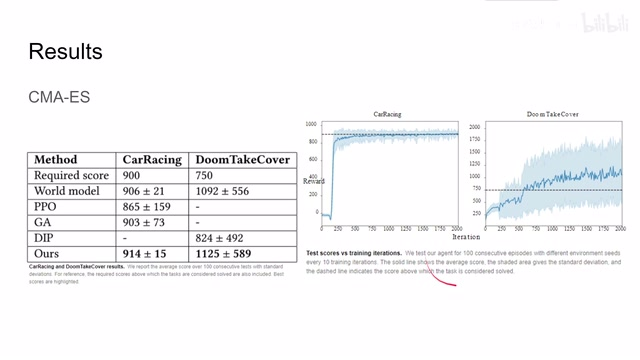
00:09:24–00:09:28 · 画面 03600:09:28–00:10:52 · 画面 037
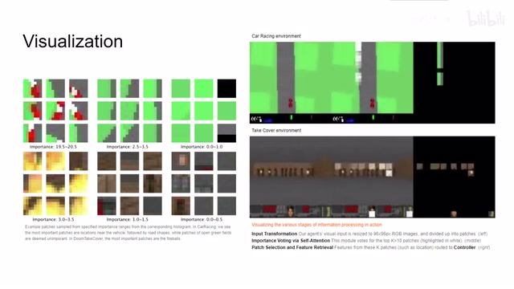
00:09:28–00:10:52 · 画面 037之前我们谈到了 importance factor 也就是说我们会选择这个图像中最重要的几个 patches 来看那么在我们训练好这个模型之后哪些 patches 是重要的呢对于这个 car racing 这个环境那么我们看到最重要的像这些跑道的边缘然后呢像这些路的边缘都是很重要的而像其他的这些背景这些绿色背景或者是道路啊就是不那么重要的这边我们看到这是输入的图像中间的白色的区就是我们最终选的很重要的几个 important patches 可以看到这个模型的表现是非常符合我们直觉的因为我们开车的时候对吧其实就是在关注道路的边缘其实我们只要知道道路的边缘的走势我们就可以把这个车开好再看这个 VizDoom Take Cover 这个环境可以看到模型认为这些子弹的位置它们是非常重要的然后就是外星人所站的这个墙的位置
那么最后呢就像这些天花板啊地板这些地方就不那么重要那我可以看到呢在加入这个 self-attention 这个机制之后我们的学到的模型呢是非常符合人的这个操作的直觉的那么在此基础上作者想了解本文提出的模型能不能应对更加泛化的情况呢这里呢作者测试了比如说在 CarRacing 环境里面我更换了一些背景的颜色我换成了这个
00:10:52–00:12:32 · 画面 038
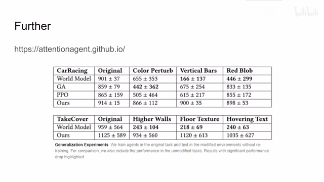
00:10:52–00:12:32 · 画面 038Vertical 的图像也就是在图像的两侧增加黑色的边框增加意义不明的色块来扰乱程序的判断那么可以看到我们之前提及的 World Model 对这些 Generalize 的这些环境是非常敏感的但表现下降很大其他的方法也都是有不同程度的下降本文提出的方法因为它能够很准确的找到说我应该最注意哪几个方块而我们的模型呢不会去在意其他的那些不重要的内容所以说呢本文的提出的方法的表现呢相对是非常稳定的那么同样的在 TakeCover 这个环境里面我们换了更高的墙对吧给地板加上不同的材质然后呢甚至在这个图像中间直接打上一个文字
怎么可以看到呢相对于 World Model 本文提出的方法它的 generalize 性能它的鲁棒性能也是非常强的那么此外呢作者还测试了一些其他的环境但是这些环境下呢这个本文的模型就表现没那么好比如说使用一个随机的背景或者说是一个高斯噪声去替换原来的这个 Car Racing 的背景或者是在原来的环境中再增加一个赛道来干扰这个程序的判断那么在这种条件下呢，本文提出的方法呢，也不是说万能的，能够解决所有的问题。那么这里作者还汇报了很多有趣的可视化实验案的部分。那么欢迎大家呢，在这个网站上查看，也包括本文的所有的技术的细节，全部都在这个网站上。好的，那么总结来看，本文使用 self-attention 替换到原来 policy network 中的 convolutional layers，极大的减少了模型的参数量
00:12:32–00:12:35 · 画面 039
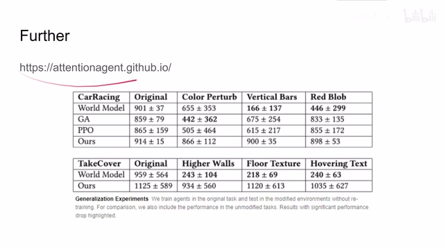
00:12:32–00:12:35 · 画面 03900:12:35–00:12:51 · 画面 040
00:12:35–00:12:51 · 画面 040同时获得一个鲁棒相当很好的模型。全文的核心思路就是围绕了 importance vector，这就是把 self-attentionattention valueattention matrix 它做 softmax 之后求和来得到 importance vector。那么这个过程来选出最重要的 patches，这么也就是本文的核心的思想思路。非常明确，实现也很简单，而且得到的结果也非常不错。所以在我看来是一篇非常有意思有价值的论文
00:12:51–00:13:08 · 画面 041
00:12:51–00:13:08 · 画面 04100:13:08–00:13:30 · 画面 042
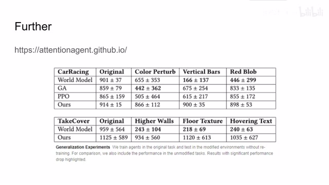
00:13:08–00:13:30 · 画面 042好的，那么以上就是我对这篇论文的简单的分析。如果你感兴趣，那我非常推荐你呢，到这个网站上去看它详细的文章的资料。那么感谢您的收看，再见
00:13:30–00:13:30 · 画面 043
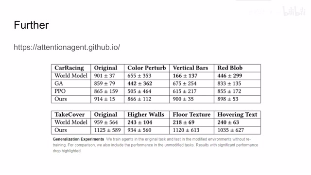
00:13:30–00:13:30 · 画面 043转写与来源说明 · 2 个自动复核提示
保留 64 个原始语音片段，2 个片段触发自动复核提示。提示仅用于定位可能的术语、重复或识别问题，不等于已确认错误。
讲解画面为源视频截图（640×360），不是可编辑 PPT 文件。全片按每秒 2 帧扫描内容变化，逐步展开页保留；连续动画保留代表画面。清晰度受源视频限制。
原视频：paper/合集_2026-10-16_机器人学/[论文简析]Neuroevolution of Self-interpretable Agents[2003.08165].mp4
SHA-256：bd39e42157d3320512031df4b24f6d447d2e992976058ddf5044b0867f0bb13a
把图像变成 latent representation
它有这个 mixture density network
全文按视频语音与画面制作。原论文可从上方链接下载；完整资料包保留全文、原始逐字稿、字幕和校对记录。